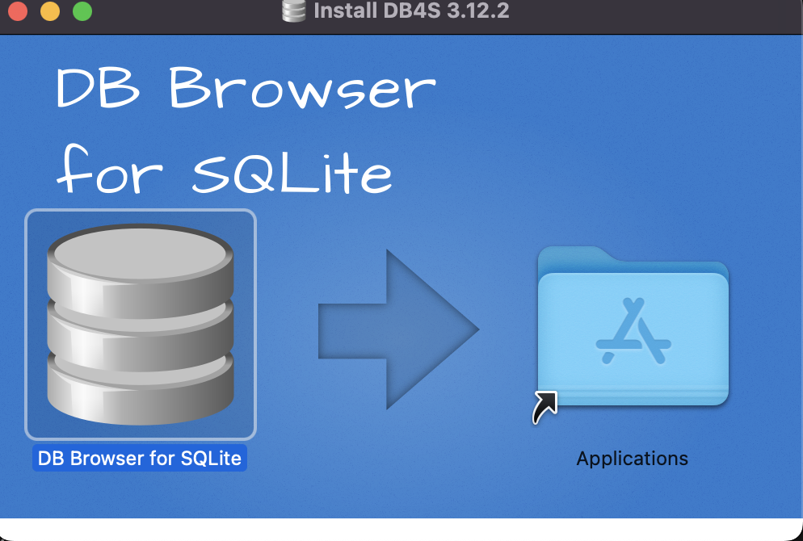
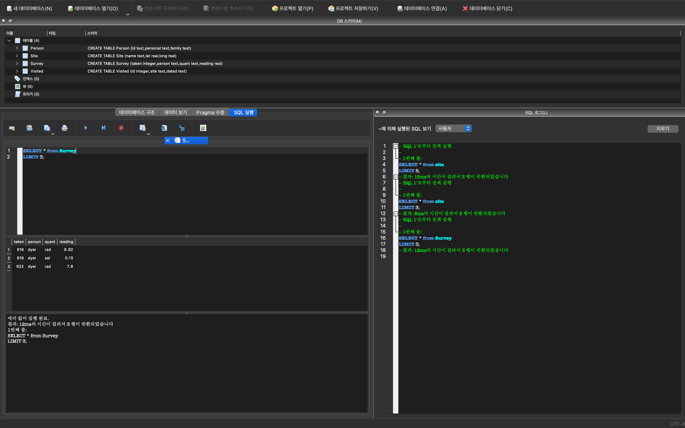

library(webshot2)
webshot(url="https://allisonhorst.github.io/palmerpenguins/", selector = "#meet-the-palmer-penguins > p > img", "images/penguin-species.png")8 CLI 데이터 과학
데이터 과학은 데이터 마이닝(Data Mining)과 유사하게 정형, 비정형 형태를 포함한 다양한 데이터로부터 지식과 인사이트를 추출하는데 과학적 방법론, 프로세스, 알고리즘, 시스템을 동원하는 융합분야다. 데이터 과학은 데이터를 통해 실제 현상을 이해하고 분석하는데 통계학, 데이터 분석, 기계학습과 연관된 방법론을 통합하는 개념으로 정의된다. 튜링상을 수상한 짐그레이(Jim Gray) 박사는 데이터 과학은 과학의 네번째 패러다임으로 정의하고 과학(경험, 이론, 계산, 그리고 이제 데이터)에 관한 모든 것이 바뀌고 있는데 이유는 정보기술과 데이터 범람(data deluge)때문이라고 주장했다.[@tolle2011fourth] 즉 다양한 데이터 예를 들면, 텍스트 데이터, 직사각형 데이터, 시각 데이터, 네트워크 데이터, 공간정보 지도데이터, 문서 데이터 등 다양한 형태의 데이터를 이용할 수 있게 되었고, 빅데이터, 고성능 컴퓨팅(HPC), 클라우드 컴퓨팅, 병렬 프로그래밍 등을 활용하여 정형, 비정형 데이터를 저장하고 쉽게 접근하여 가치를 창출하게 됨으로써 CLI 데이터 과학에 대한 재조명이 이뤄지고 있다.
8.1 펭귄 데이터셋
8.1.1 펭귄 데이터 출현
미국에서 “George Floyd”가 경찰에 의해 살해되면서 촉발된 “Black Lives Matter” 운동은 아프리카계 미국인을 향한 폭력과 제도적 인종주의에 반대하는 사회운동이다. 한국에서도 소수 정당인 정의당에서 기사로 낼 정도로 적극적으로 나서고 있다.1
데이터 과학에서 최근 R.A. Fisher의 과거 저술한 “The genetical theory of natural selection” [@edwards2000genetical] 우생학(Eugenics) 대한 관점이 논란이 되면서 R 데이터 과학의 첫 데이터셋으로 그가 만들었다고 하는 붓꽃 iris 데이터를 대안적 데이터, 즉 펭귄 데이터로 대체하는 움직임이 활발히 전개되고 있다. palmerpenguins [@penguin2020] 데이터셋이 대안으로 많은 호응을 얻고 있다. [@AbdulMajedRaja2020], [@Levy2019]
8.1.2 펭귄 공부
팔머(Palmer) 펭귄은 3종이 있으며 자세한 내용은 다음 나무위키를 참조한다. 2
- 젠투 펭귄(Gentoo Penguin): 머리에 모자처럼 둘러져 있는 하얀 털 때문에 알아보기가 쉽다. 암컷이 회색이 뒤에, 흰색이 앞에 있다. 펭귄들 중에 가장 빠른 시속 36km의 수영 실력을 자랑하며, 짝짓기 할 준비가 된 펭귄은 75-90cm까지도 자란다.
- 아델리 펭귄(Adelie Penguin): 프랑스 탐험가인 뒤몽 뒤르빌(Dumont D’Urville) 부인의 이름을 따서 ’아델리’라 불리게 되었다. 각진 머리와 작은 부리 때문에 알아보기 쉽고, 다른 펭귄들과 마찬가지로 암수가 비슷하게 생겼지만 암컷이 조금 더 작다.
- 턱끈 펭귄(Chinstrap Penguin): 언뜻 보면 아델리 펭귄과 매우 비슷하지만, 몸집이 조금 더 작고, 목에서 머리 쪽으로 이어지는 검은 털이 눈에 띈다. 어린 고삐 펭귄들은 회갈색 빛을 띄는 털을 가지고 있으며, 목 아래 부분은 더 하얗다. 무리를 지어 살아가며 일부일처제를 지키기 때문에 짝짓기 이후에도 부부로써 오랫동안 함께 살아간다.

다음으로 iris 데이터와 마찬가지로 펭귄 3종을 구분하기 위한 변수로 조류의 부리에 있는 중앙 세로선의 융기를 지칭하는 능선(culmen) 길이(culmen length)와 깊이(culmen depth)를 비롯하여 체질량, 서식섬, 조사년도, 성별, 물갈퀴 길이가 포함되어 있고 결측값도 일부 변수에 포함되어 있어 붓꽃 데이터를 대체하여 최근 많이 사용되고 있다.
library(webshot)
webshot(url="https://allisonhorst.github.io/palmerpenguins/", selector = "#what-are-culmen-length--depth > p:nth-child(4) > img", "fig/penguin-species-variable.png")
8.2 윈도우 파일 변환
쉘 스크립트와 csv 파일을 비롯한 텍스트 파일은 운영체제에 관계없이 호환이 가능하다. 하지만 사람눈에 보이지 않는 공백문자에서 운영체제를 처리하는 방식에 차이가 있다. 기본적으로 대부분의 코딩 및 데이터 분석 환경에서는 줄 바꿈을 나타내는 줄 바꿈으로 UNIX 스타일 줄 바꿈(ASCII LF 문자)이 사용된다. 하지만, Windows에서는 텔레타이프 기반 시스템과의 레거시 호환성을 위해 기본설정으로 대체 줄 끝 기호(ASCII CR LF 문자)가 사용된다. 이러한 이유로 윈도우 환경에서 저장한 텍스트 파일을 우분투와 같은 환경에서 배쉬(.sh) 확장자로 실행할 경우 다음과 같은 오류가 발생된다.
line 2: $'\r': command not found이런 오류를 해결하기 위해서 dos2unix 유틸리티를 설치한 후 유닉스 환경에 실행가능한 파일 형태로 변환 시킨 후 작업을 수행한다.
$ pip install dos2unixdos2unix 유틸리티을 설치한 후 작성한 쉘 스크립트 파일이 윈도우에서 작성되었다면 리눅스에서 실행할 수 있도록 dos2unix 명령어를 사용해서 변환작업을 수행한다.
$ dos2unix code/count_species.sh
dos2unix: converting file code/count_species.sh to Unix format...
$ bash code/count_species.sh8.3 R/파이썬
데이터 과학 분야에서는 일반적으로 R 혹은 파이썬을 사용해서 분석을 한다. 특히 tidyverse 문법에 익숙하면 직관적으로 파이프를 연결하여 의식의 흐름에 맞춰 직관적인 코드를 작성할 수 있다. 파이썬 pandas를 사용해도 동일한 결과를 얻을 수 있다. 이유는 초기 pandas가 R 데이터프레임을 참고하여 개발이 되었기 때문에 구문을 비롯하여 공통점이 다수 존재한다. [@severance2015python] [@ruser2023]
따라서, 동일한 개념을 R 혹은 파이썬 구문을 달리하여 표현하는 것에 불과하기 때문에, R 혹은 파이썬으로 동작하는 코드를 빠르게 작성하고 동작여부를 확인한 후에 챗GPT에 유닉스 쉘 코드 변환 지시명령어를 전달하면 손쉽게 쉘 스크립트를 얻게 되고 이를 CLI 환경에서 실행함으로써 대용량 데이터도 빠르게 고급 분석기능을 넣어 실행에 옮길 수 있다.[@severance2009python]
R 코드
펭귄 데이터는 R 데이터 패키지(palmerpenguins)로 install.packages("palmerpenguins") 명령어로 R에서 설치가 가능하다. 하지만, 유닉스 쉘 CLI 환경에서 실습을 위해서 csv 원자료 파일형태로 다운로드 받는 방법을 살펴보자. dir.create() 함수로 data 디렉토리를 생성하고 download.file() 함수로 penguins.csv 파일을 웹사이트에서 가져와서 “data/penguins.csv” 위치에 저장시킨다.
데이터가 준비되면 펭귄 데이터 .csv 정형데이터에서 범주형 펭귄 종(species) 칼럼을 추출하여 빈도수를 계산해보자.
dir.create("data")
download.file("https://gist.githubusercontent.com/slopp/ce3b90b9168f2f921784de84fa445651/raw/4ecf3041f0ed4913e7c230758733948bc561f434/penguins.csv", destfile = "data/penguins.csv")library(tidyverse)
penguins <- read_csv("data/penguins.csv")
penguins %>%
count(species) %>%
arrange(desc(n))
#> # A tibble: 3 × 2
#> species n
#> <chr> <int>
#> 1 Adelie 152
#> 2 Gentoo 124
#> 3 Chinstrap 68파이썬 코드
R 환경에서 data 디렉토리를 생성하고 penguins.csv 파일 다운로드 받아 로컬 디렉토리에 펭귄 csv 파일이 존재하기 때문에 이를 판다스 read_csv() 함수로 가져온 후 판다스 문법에 맞춰 분석 작업을 동일하게 수행한다.
import pandas as pd
penguins = pd.read_csv("data/penguins.csv")
species_count = penguins["species"].value_counts().reset_index()
species_count.columns = ["species", "n"]
species_count = species_count.sort_values(by="n", ascending=False)
print(species_count)
#> species n
#> 0 Adelie 152
#> 1 Gentoo 124
#> 2 Chinstrap 68R tidyverse 문법과 판다스 문법을 보면 동일한 기능을 데이터프레임에 대해 수행하지만, 가독성과 중복 코드의 길이를 보게 되면 차이가 확연히 느껴진다. 이러한 차이가 발생된 원인은 R tidyverse 문법체계가 나중에 정립되었기 때문에 발생된 것이고 파이썬에도 siuba 패키지가 개발되어 판다스의 모든 기능을 구현하지는 못하지만 자주 사용되는 기능은 제공하고 있다.
8.4 CLI 분석작업
펭귄 종별 개체수를 구하는 단순한 작업을 R 혹은 파이썬으로 구현하려면, 1) R 혹은 파이썬을 설치하고, 2) 연관된 패키지를 설치하고, 3) 통합개발환경(VS코드, RStudio, 파이참 등)도 준비한 다음, 4) R/파이썬 코드를 작성하여 버그를 제거한 후 결과값을 얻게 된다. 하지만, 운영체제에서 기본 제공되는 도구를 활용하여 동일한 결과를 얻을 수 있는 방법이 존재한다면, 다른 도구를 설치하지 않아 공간도 절약하고 속도도 빠르다면 큰 장점이 된다. 유닉스 쉘 기반 CLI 데이터 과학이 사라지지 않고 현재도 굳건히 자리를 지키는 이유기도 하다. 유닉스 쉘에서 R 혹은 파이썬 데이터 과학업무를 대신하려면 코드가 길어지고 가독성도 떨어진다. 이를 보완하기 위해 개발된 csvkit 유닉스 도구를 설치한다. [@janssens2021data]
R이나 파이썬이 (비)정형 데이터를 자유로이 처리하는 배경에는 다양한 패키지의 도움이 필수적이다. 어떤 문제를 풀기 위해 도서관에서 책을 대여하여 책상에 펼쳐놓고 수차례 시도와 교정작업을 통해 최종 문서를 완성하는 것처럼 R에서는 도서관에 새로운 도서를 비치하는 작업이 install.packages()이고, 특정 업무에 필요한 도서를 가져오는 작업이 library()라고 할 수 있다. 파이썬도 동일한 개념을 pip를 통해 패키지를 설치하고 import 명령어로 패키지를 불러와서 작업을 수행한다. 유닉스 쉘에서 .csv 파일을 처리하는데 필요한 패키지(csvkit)를 pip 명령어로 설치한다.
$ pip install csvkit다음 챗GPT에 앞에서 작성한 R 혹은 파이썬 코드를 쉘 스크립트(Unix code)로 재작성요청을 보내면, 난이도가 높지 않고 직관적인 쉘 스크립트를 작성해준다. data/penguins.csv 파일에서 species에 해당되는 칼럼을 찾아낸 다음 정렬하고 앞서 학습한 uniq 명령어를 사용하여 빈도수를 계산하고 보기 좋은 형태로 정렬하게 만들면 된다. 작성한 code/count_species.sh 쉘 스크립트는 다음과 같다.
#!/bin/bash
# `species` 칼럼 번호 찾기
species_col=$(csvcut -n data/penguins.csv | grep -w "species" | cut -d: -f1)
# CSV 파일 변수명 제거하고 각 종별로 빈도수를 계산한 후 내림차순으로 정렬하여 보기 좋게 출력
csvcut -c "$species_col" data/penguins.csv | tail -n +2 | sort | uniq -c | sort -rn | awk '{ print $2 "," $1 }'count_species.sh 쉘 스크립트를 실행하게 되면 다음과 같은 결과를 얻게 된다. R과 파이썬에서 분석한 것과 정확하게 동일한 결과를 얻지만 구현방법에서 차이가 난다.
bash code/count_species.sh
Adelie,152
Gentoo,124
Chinstrap,688.4.1 파일 살펴보기
CLI 데이터 분석을 위해서 분석 대상이 되는 파일을 살펴볼 필요가 있다. 이를 위해서 cat 명령어를 통해 분석 대상 파일 data 디렉토리 아래 penguins.csv 파일을 열어본다. 하지만 너무 길어 한정된 화면에서 파이프 | 로 연결하여 첫 5줄만 head 명령어로 확인한다.
$ cat data/penguins.csv | head -n 5
"rowid", "species", "island", "bill_length_mm", "bill_depth_mm", "flipper_length_mm", "body_mass_g", "sex", "year"
"1","Adelie","Torgersen",39.1,18.7,181,3750,"male",2007
"2","Adelie","Torgersen",39.5,17.4,186,3800,"female",2007
"3","Adelie","Torgersen",40.3,18,195,3250,"female",2007
"4","Adelie","Torgersen",NA,NA,NA,NA,NA,2007csvkit 패키지를 설치해서 csvlook 명령어로 좀더 가시성을 높여서 확인도 가능하다. 파일 마지막 부분을 확인하고자 한다면 tail -n 5와 같이 살펴보면 된다.
$ csvlook data/penguins.csv | head -n 5
| rowid | species | island | bill_length_mm | bill_depth_mm | flipper_length_mm | body_mass_g | sex | year |
| ----- | --------- | --------- | -------------- | ------------- | ----------------- | ----------- | ------ | ----- |
| 1 | Adelie | Torgersen | 39.1 | 18.7 | 181 | 3,750 | male | 2,007 |
| 2 | Adelie | Torgersen | 39.5 | 17.4 | 186 | 3,800 | female | 2,007 |
| 3 | Adelie | Torgersen | 40.3 | 18.0 | 195 | 3,250 | female | 2,007 |8.4.2 파일 구조
데이터 분석대상 .csv 파일을 확인했다면 다음 단계로 자료형을 파악한다. 이를 위해서 csvkit에 내장된 csvsql 명령어를 통해서 변수가 범주형인지 숫자형인지 파악한다. 펭귄 데이터에는 조사연도(year) 칼럼이 포함되어 있다. 이를 날짜형으로 볼 수도 있고 여기서처럼 숫자형으로 처리가 가능하다.
$ csvsql data/penguins.csv
CREATE TABLE penguins (
rowid DECIMAL NOT NULL,
species VARCHAR NOT NULL,
island VARCHAR NOT NULL,
bill_length_mm DECIMAL,
bill_depth_mm DECIMAL,
flipper_length_mm DECIMAL,
body_mass_g DECIMAL,
sex VARCHAR,
year DECIMAL NOT NULL
);penguins.csv 파일에서 변수의 숫자와 관측점의 숫자를 파악하는 것은 탐색적 데이터 분석을 시작하기 전에 필수적으로 수행해야하는 작업이다. 다양한 방법이 있지만 다음 명령어로 행수와 칼럼수를 계산할 수 있다.
csvcut -n명령어는penguins.csv파일 변수명만 추출한다. 그다음wc -l명령어는 변수명의 행수를 세어 변수갯수를 파악한다.csvstat --count명령어를 통해 행의 갯수도 산출할 수 있다.
즉, penguins.csv 데이터셋은 \(344 \times 9\) 크기를 갖는 정형데이터다.
$ csvcut -n data/penguins.csv | wc -l
9
$ csvstat --count data/penguins.csv
344다음 단계로 각 변수별로 유일무이한 값(unique)의 갯수를 파악하는 것도 데이터셋을 이해하고 후속 분석 방향을 잡는데 큰 도움이 된다. 예를 들어, 펭귄 종수(species)가 3개로 나타나는데 이는 파머 관측소에서 관측한 펭귄 종수와 일치하고 island 섬도 마찬가지다. 하지만 sex 암수 범주는 3으로 되어 있어서, 추가 점검을 해야함을 직감적으로 느낄 수 있다.
$ csvstat data/penguins.csv --unique
1. rowid: 344
2. species: 3
3. island: 3
4. bill_length_mm: 165
5. bill_depth_mm: 81
6. flipper_length_mm: 56
7. body_mass_g: 95
8. sex: 3
9. year: 3결측값(missing value)은 간단한 기술통계를 비롯하여 기계학습 알고리즘이나 시각화 등 후속 업무에 큰 장애가 되기 때문에 조기에 이를 파악하여 제거하든가 아니면 적절한 값으로 추정하여 치환하여 온전한 데이터셋(complete dataset)으로 만들어야 된다. csvstat --nulls를 통해 변수에 결측값 유무를 파악할 수 있다.
$ csvstat data/penguins.csv --nulls
1. rowid: False
2. species: False
3. island: False
4. bill_length_mm: True
5. bill_depth_mm: True
6. flipper_length_mm: True
7. body_mass_g: True
8. sex: True
9. year: False8.4.3 기술통계량
컴퓨터 과학과 통계학의 차이를 뚜렷하게 파악할 수 있는 지점이 기술통계량이다. 자료구조와 자료형이 충족된 것을 확인하면 컴퓨터 과학에서 많은 작업이 완료되었지만, 데이터 과학은 이제 본격적인 작업을 위한 초석을 다진 것이다. csvstat 명령어를 통해서 각 칼럼별로 요약통계량을 상세히 뽑아볼 수 있다. 자료형이 범주형과 숫자형에 따라 출력되는 요약통계량이 다른 점에 주목한다.
$ csvstat data/penguins.csv | head -n 27
1. "rowid"
Type of data: Number
Contains null values: False
Unique values: 344
Smallest value: 1
Largest value: 344
Sum: 59340
Mean: 172.5
Median: 172.5
StDev: 99.448
Most common values: 1 (1x)
2 (1x)
3 (1x)
4 (1x)
5 (1x)
2. "species"
Type of data: Text
Contains null values: False
Unique values: 3
Longest value: 9 characters
Most common values: Adelie (152x)
Gentoo (124x)
Chinstrap (68x)만약, 특정 변수를 선택하여 기술통계량을 뽑아보고자 한다면, csvstat 명령어에 -c 5,sex와 같이 칼럼 번호와 칼럼명을 지정하면 된다.
$ csvstat data/penguins.csv -c 5,sex
5. "bill_depth_mm"
Type of data: Number
Contains null values: True (excluded from calculations)
Unique values: 81
Smallest value: 13.1
Largest value: 21.5
Sum: 5865.7
Mean: 17.151
Median: 17.3
StDev: 1.975
Most common values: 17 (12x)
18.6 (10x)
17.9 (10x)
18.5 (10x)
15 (10x)
8. "sex"
Type of data: Text
Contains null values: True (excluded from calculations)
Unique values: 3
Longest value: 6 characters
Most common values: male (168x)
female (165x)
None (11x)
Row count: 3448.5 대용량 데이터 처리 전략
몇 기가바이트(GB) 규모의 대용량 데이터를 데이터 분석에 앞서 적절한 크기로 줄이는 것이 필요하기도 하다. 특히, 빠른 데이터 분석을 위해서 대용량 데이터에서 정보를 잃지 않으면서 일부를 표본추출하여 적절한 크기로 줄인 후에 이를 R/파이썬 등 전문 데이터 분석 언어로 코딩을 하는 것도 유닉스 쉘과 좋은 성과를 내는 전략 중 하나가 된다.
8.5.1 압축파일 풀기
데이터분석을 위해 정형 데이터가 아닌 비정형 데이터를 마주치게 되면 통상 압축파일 형태로 전달이 된다. 기본적인 소용량 압축파일은 쉽게 풀리나 대용량 압축파일(GB가 넘어감)은 전용 압축/압축해제 프로그램을 사용한다.
맥 기준으로 설명하면 p7zip 전용 프로그램을 통해 대용량 압축 파일을 푼다. 설치방법은 brew install p7zip을 터미널에서 실행한다. 7z x 압축파일명 명령어를 입력하면 압축파일이 풀려 원본 파일이 나타난다.
$ brew install p7zip
$ 7z x data_2016-10-05.zip
$ ls -al
total 11236792
drwxr-xr-x+ 59 stat..... staff 2006 10 12 18:35 .
drwxr-xr-x 5 root admin 170 1 15 2016 ..
-rwxrwxrwx 1 stat..... staff 1169766972 10 7 20:21 data_2016-10-05.zip
-rw-r--r-- 1 stat..... staff 4578470987 10 5 23:18 players_result.txtdata_2016-10-05.zip 1.1 GB 압축파일을 풀게되면 4.5 GB 텍스트 파일로 생성된 것이 확인된다.
8.5.2 표본추출 전략 수립
표본추출을 위한 작업을 위해서 먼저 전략을 잘 수립하여야 한다. 전체 파일에 대한 1% 임의추출을 목표로 삼고 표집하는 경우를 상정한다.
$ wc -l players_result.txt
174163238 players_result.txtwc -l 명령어는 해당 파일에 행이 얼마나 되는지 알아내는 명령어다. 이를 통해서 1.7억줄이 있는 것이 확인된다. 이를 바탕으로 1% 임의추출할 경우 약 170만줄을 임의추출하면 된다.
8.5.3 표본추출 툴설치
표본추출을 위해 설치해야 되는 도구는 기본적으로 sort, shuf, gshuf가 있다. 기능적인 면을 떠나 대용량 파일의 경우 성능 속도가 도구를 선택하는 중요한 요인이다. 3
백만줄을 seq -f 'line %.0f' 1000000 명령어로 생성하여 표집한 경우 성능이 가장 좋은 것은 다음과 같은 순으로 정렬된다.
shuf: 0.090 초- 루비 2.0: 0.289 초
- 펄 5.18.2: 0.589 초
- 파이썬 : 1.342 초
- awk + sort + cut: 3.003 초
- sort -R : 10.661 초
- 스칼라: 24.229 초
- 배쉬 루프 + sort : 32.593초
따라서 shuf를 리눅스에서 gshuf를 맥에서 사용하면 최선의 성과를 얻을 수 있다.
gshuf가 맥의 경우 coreutils에 포함되어 있기 때문에 이를 설치해야 되는데, 이전에 brew link xz을 실행하고 바로 설치한다.
$ brew link xz
$ brew install coreutils8.5.4 1% 표본 추출
gshuf, shuf 명령어는 -n 인자로 추출할 행을 수를 지정하면 자동으로 추출해주는데, 결과를 리다이렉션하여 players_170000.txt 파일에 저장한다.
표본추출결과 데이터 크기를 \(\frac{1}{1,000}\), \(\frac{1}{10,000}\) 줄인 것이 확인된다.
$ gshuf -n 17000 players_result.txt > players_17000.txt
$ gshuf -n 170000 players_result.txt > players_170000.txt
$ ls -al
total 11236792
drwxr-xr-x+ 59 stat..... staff 2006 10 12 18:35 .
drwxr-xr-x 5 root admin 170 1 15 2016 ..
-rwxrwxrwx 1 stat..... staff 1169766972 10 7 20:21 data_2016-10-05.zip
-rw-r--r-- 1 stat..... staff 447091 10 12 18:35 players_17000.txt
-rw-r--r-- 1 stat..... staff 4468179 10 12 18:35 players_170000.txt
-rw-r--r-- 1 stat..... staff 4578470987 10 5 23:18 players_result.txt8.6 데이터베이스
데이터 과학자에게 데이터베이스는 필수적인 도구다. 데이터베이스는 구조화된 데이터를 효율적으로 저장하고 쿼리문을 사용해서 조회할 수 있으며, 대용량 데이터를 처리하는 데 유용하다. 데이터 통합, 정제, 변환 등의 전처리 작업도 가능하고, 데이터의 안정성과 보안도 함께 보장해주기 때문에 데이터 분석 작업을 하고 모형을 개발하는 분들이 선호하는 원천 자료중에 하나다.
데이터베이스를 관리할 경우 도구가 필요한데 로컬 PC에서 설치하여 바로 사용할 수 있는 SQLite, DuckDB가 많이 사용된다. 먼저 SQLite를 살펴보고 대용량 공공 데이터 사례로 DuckDB도 설치하여 함께 활용할 예정이다.
8.6.1 SQLite
SQLite 다운로드 웹사이트에서 운영체제에 적합한 SQlite 소프트웨어를 설치하는데 윈도우즈와 리눅스 계열(맥 포함)에 다소 차이가 있지만 SQL 쿼리문을 주로 사용하는 사용자 입장에서는 차이는 없다.
윈도우즈
예를 들어, 윈도우 10 환경에서 “Precompiled Binaries for Windows” → sqlite-tools-win32-x86-3400000.zip 파일을 다운로드 받는다.
다음으로 압축을 풀어 로컬 컴퓨터에 설치하고 예를 들어, C:\sqlite 디렉토리에 저장한 경우 환경변수에 경로를 등록하여 윈도우 쉘에서 sqlite3.exe를 실행하게 되면 어디서든 불러 사용할 수 있도록 준비한다.

맥 설치
맥에서 SQLite를 설치하는 방법은 매우 단순하다. DB Browser for SQLite 웹사이트에서 맥버전(Intel or Apple Silicon) 버전을 다운로드 받아 설치하면 된다.

$ sqlite3 --version
3.37.0 2021-12-09 01:34:53 9ff244ce0739f8ee52a3e9671adb4ee54c83c640b02e3f9d185fd2f9a179aapl
$ sqlite3
SQLite version 3.37.0 2021-12-09 01:34:53
Enter ".help" for usage hints.
Connected to a transient in-memory database.
Use ".open FILENAME" to reopen on a persistent database.
sqlite> .quit
$ 8.6.2 survey.db 데이터베이스
소프트웨어 카페트리 학습용 survey.db 파일을 다운로드하여 data/survey.db로 저장시킨다. 콘솔에서 데이터베이스 테이블을 확인하고 테이블 중 한 테이블을 골라 SQL 쿼리를 보낸다.
fs::dir_create("data")
download.file(url = "https://github.com/swcarpentry/sql-novice-survey/raw/gh-pages/files/survey.db", destfile = "data/survey.db")trying URL 'https://github.com/swcarpentry/sql-novice-survey/raw/gh-pages/files/survey.db'
Content type 'application/octet-stream' length 6144 bytes
==================================================
downloaded 6144 bytes8.6.3 SQL 쿼리
SQLite가 설치되고 데이터베이스가 있다면 SQL 쿼리문을 작성하여 원하는 결과를 얻을 수 있다. SQLite 콘솔에서 .table을 명령어를 survey.db에 포함된 테이블을 확인한다. 이후 survey.db 데이터베이스 중 Person 테이블에 담긴 정보를 SELECT 명령어로 확인한다.
$ sqlite3 data/survey.db
SQLite version 3.37.0 2021-12-09 01:34:53
Enter ".help" for usage hints.
sqlite> .table
Person Site Survey Visited
sqlite> SELECT * from Person;
dyer|William|Dyer
pb|Frank|Pabodie
lake|Anderson|Lake
roe|Valentina|Roerich
danforth|Frank|Danforth
sqlite> .quit동일한 사항을 DB Browser for SQLite 쿼리도구를 사용하면 직관적으로 다양한 SQL 문을 데이터베이스에 전달하여 원하는 결과를 얻을 수 있다. 데이터베이스 전용 SQL 쿼리도구는 데이터베이스를 구성하는 테이블과 연결 정보를 별도 패널로 구성하여 제공하고 있으며, 핵심이 되는 쿼리문을 작성하고 이를 단축키를 통해 결과도 즉시 확인할 수 있는 전용 패널도 제공한다. 데이터베이스 작업에 필요한 전체 기능을 한눈에 파악 할 수 있어 편리하다.

정환봉 기자 (2020-06-15), “여당 의원 176명 중 누가?…차별금지법 발의할 ’의인’을 구합니다”, 한겨레 신문↩︎
http://stackoverflow.com/questions/2153882/how-can-i-shuffle-the-lines-of-a-text-file-on-the-unix-command-line-or-in-a-shel↩︎